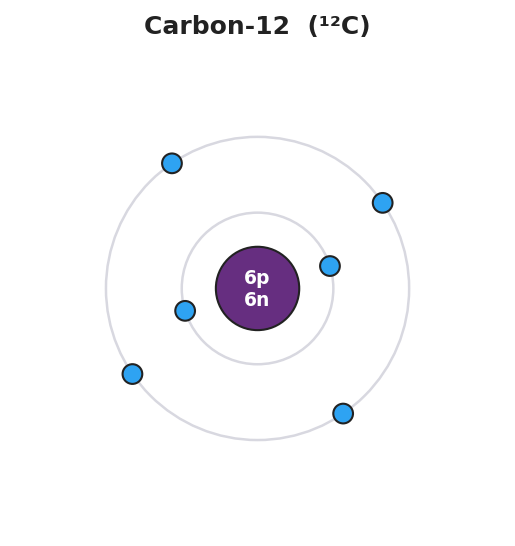

01 Phenomenon
Carbon comes in different “versions.” Carbon-12 has 6 neutrons, carbon-13 has 7, and carbon-14 has 8 — carbon-14 is even radioactive and is the isotope scientists use to date ancient bones and artifacts. Yet every one of them is still carbon. A sodium atom (Na) and a sodium ion (Na⁺) are also still both sodium, even though the ion has lost an electron. But make one different kind of change — add a single proton to a carbon atom — and it stops being carbon entirely. It becomes nitrogen, a completely different element.
02 Driving question
Why is the identity of an element fixed by its number of protons alone — and not by its neutrons or electrons?
03 Notice & wonder
| I notice… | I wonder… |
|---|---|
Turn & Talk #1: Carbon-12 and carbon-14 are both carbon, but they have different numbers of neutrons. In one sentence: what number is the same for both of them — the number that never changed, no matter which carbon you looked at?
04 Initial model
Before your teacher names the process: here is fluorine on the Periodic Table. Its atomic number is 9 and its mass number is 19. Using only those two numbers, work out the particles in a neutral fluorine atom. Show how you got the neutrons.
| Quantity | Show your work | Value |
|---|---|---|
| Protons | = atomic number | |
| Neutrons | = mass number − atomic number (19 − 9) | |
| Electrons | = protons (neutral atom) |
How many protons does fluorine have? _______________
How did you find the number of neutrons? _______________________________________________
Why does a neutral atom have the same number of electrons as protons? _______________________________________________
05 Investigate
Part 1 — ABCs: Build an Atom (simulation or counters)
Use the Build an Atom simulation (or counters with the Bohr-model template). Build each atom, then record what happens to the element name when you change one kind of particle.
| Step | What you do | Element name now | Did the element change? (yes/no) |
|---|---|---|---|
| 1 | Build an atom with 6 protons | ||
| 2 | Add 1 neutron (keep 6 protons) | ||
| 3 | Add another neutron (still 6 protons) | ||
| 4 | Remove 1 electron (still 6 protons) | ||
| 5 | Go back to 6 protons, then add 1 proton (now 7) |
Key question: Which single change — and only which change — caused the element name to switch to a new element?
Part 2 — Counting particles from a symbol
Determine protons, neutrons, and electrons for each species. Use the Periodic Table. Show the neutron subtraction (mass number − atomic number).
Species A: ³⁹K (potassium-39, neutral atom)
| Quantity | How to find it | Value |
|---|---|---|
| Protons | = atomic number | |
| Neutrons | = mass number − atomic number (39 − ___) | |
| Electrons | = protons (neutral) |
Species B: ²⁴Mg²⁺ (magnesium-24 ion, charge +2)
| Quantity | How to find it | Value |
|---|---|---|
| Protons | = atomic number | |
| Neutrons | = mass number − atomic number (24 − ___) | |
| Electrons | = protons − charge (___ − 2) |
Species C: ³⁵Cl⁻ (chloride ion, charge −1)
| Quantity | How to find it | Value |
|---|---|---|
| Protons | = atomic number | |
| Neutrons | = mass number − atomic number (35 − ___) | |
| Electrons | = protons − charge (___ − (−1)) |
Look at your three species. Which quantity — protons, neutrons, or electrons — stayed equal to the atomic number every single time, no matter the isotope or the charge?
Slide the atomic number. Protons (and the element's identity) change with Z; electrons fill shells 2, then 8, then 8. The neutron count here comes from each element's most common isotope.
06 Make it make sense
For each species below, determine the number of protons, neutrons, and electrons. Show your complete table. These are the same species you counted in the Investigation — confirm your work here.
1. ³⁹K (potassium-39, neutral)
| Quantity | How to find it | Value |
|---|---|---|
| Protons | = atomic number | |
| Neutrons | = mass number − atomic number | |
| Electrons | = protons (neutral) |
2. ²⁴Mg²⁺ (magnesium-24, charge +2)
| Quantity | How to find it | Value |
|---|---|---|
| Protons | = atomic number | |
| Neutrons | = mass number − atomic number | |
| Electrons | = protons − charge |
3. ³⁵Cl⁻ (chloride, charge −1)
| Quantity | How to find it | Value |
|---|---|---|
| Protons | = atomic number | |
| Neutrons | = mass number − atomic number | |
| Electrons | = protons − charge |
The figure below shows how a neutral carbon-12 atom is put together — 6 protons and 6 neutrons in the nucleus, with 6 electrons in shells around it. Use it as a model for how protons, neutrons, and electrons fit into any atom.

07 Key vocabulary
- atomic number
- the number of protons in an atom's nucleus; symbolized Z; it is given directly on the Periodic Table and it defines the element — every element has its own unique atomic number, and changing it changes the element
- mass number
- the total number of protons plus neutrons in an atom's nucleus; symbolized A; neutrons are found by subtracting the atomic number from the mass number (neutrons = A − Z)
- isotope
- one of two or more atoms of the same element (same number of protons, same atomic number) that differ in their number of neutrons, and therefore in their mass number; e.g., carbon-12, carbon-13, and carbon-14 are isotopes of carbon
Use each term in a sentence about today’s investigation. Do not copy the definition — describe something you actually did or observed.
atomic number: _______________________________________________ _______________________________________________
mass number: _______________________________________________ _______________________________________________
isotope: _______________________________________________ _______________________________________________
08 Revise your model
Return to your Initial Model (the fluorine table). Add vocabulary labels:
Circle the 9 and label it “atomic number = protons.”
Underline the 19 and label it “mass number = protons + neutrons.”
Write a revised appositive sentence for fluorine:
The atomic number of fluorine — ___ — tells us a fluorine atom has ___ protons, which is what makes it fluorine and not any other element.
Then finish this Because / But / So sentence:
Carbon-12 and carbon-14 are both still carbon because __________________________________________, but __________________________________________, so __________________________________________.
09 Exit ticket
(a) Oxygen-18 (¹⁸O) is a neutral atom. Determine the protons, neutrons, and electrons. Show the neutron subtraction.
| Quantity | How to find it | Value |
|---|---|---|
| Protons | = atomic number | |
| Neutrons | = mass number − atomic number | |
| Electrons | = protons (neutral) |
(b) An aluminum ion is written Al³⁺ with mass number 27. Determine the protons, neutrons, and electrons.
| Quantity | How to find it | Value |
|---|---|---|
| Protons | = atomic number | |
| Neutrons | = mass number − atomic number | |
| Electrons | = protons − charge |
(c) In one sentence, explain why adding one proton to a fluorine atom would change it into a different element.
10 Explore further
- Build an Atom — PhET Interactive Simulations (`phet.colorado.edu/en/simulations/build-an-atom`): students drag protons, neutrons, and electrons into an atom and watch three things update live — the element name (set by proton count), the mass number (protons + neutrons), and the net charge (protons − electrons). The key investigation move: add a proton and watch the element name *change*; add a neutron or remove an electron and watch the element name *stay the same*. This is the phenomenon made interactive. A non-digital fallback is provided in the worksheet (bead/counter "build an atom" using the `figures/carbon12_bohr_model.png` template).
- Subatomic-particle counting practice: using the Periodic Table from the 2025 NYS Chemistry Reference Tables, students determine protons, neutrons, and electrons for a series of neutral atoms and ions, recording each in a structured table: symbol | atomic number (Z) | mass number (A) | protons | neutrons (A − Z) | electrons.